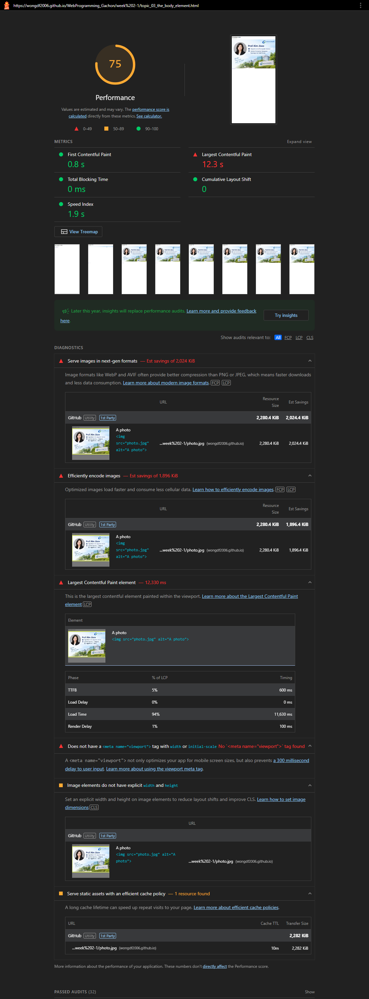
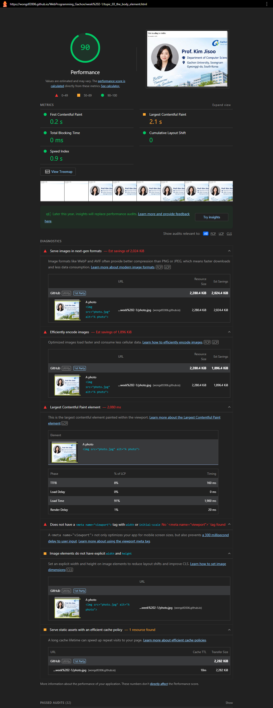
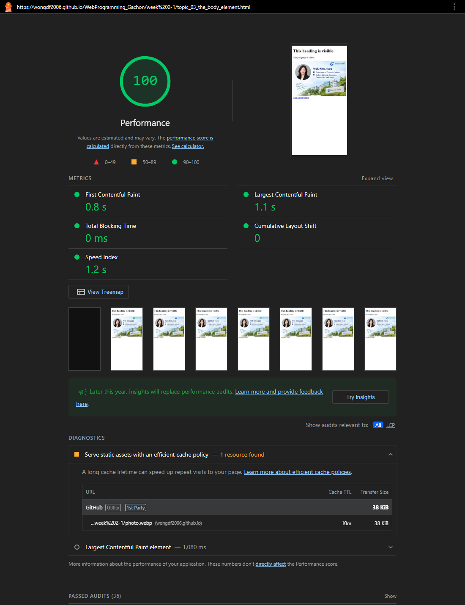
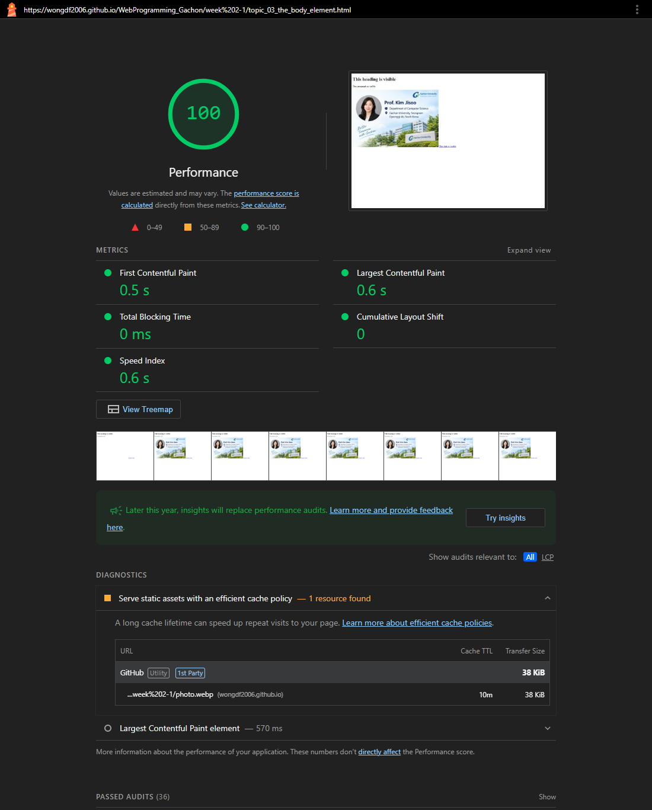

Homework 2 · Lighthouse Performance Audit — Week 9_2
Summary
I ran Lighthouse Performance on the image-heavy pages of my site. The worst was this Week 2 page: it loads a 2.3 MB photo, and on mobile its Largest Contentful Paint took 12.3 s. Five optimizations brought it to 100 on both mobile and desktop.
Step 1 · Baseline audit (before)
| Metric | Mobile (slow 4G) | Desktop | Target |
|---|---|---|---|
| Performance score | 75 | 90 | 90+ |
| First Contentful Paint | 0.8 s | 0.2 s | < 1.8 s |
| Largest Contentful Paint | 12.3 s | 2.1 s | < 2.5 s mobile |
| Total Blocking Time | 0 ms | 0 ms | < 200 ms |
| Cumulative Layout Shift | 0 | 0 | < 0.1 |
| Speed Index | 1.9 s | 0.9 s | < 3.4 s |
| Data transferred | 2,287.8 KiB in 3 requests (1 failed: 404 favicon.ico) | ||


Step 2 · Five biggest issues found
| # | Issue (Lighthouse audit) | Evidence |
|---|---|---|
| 1 | Image far larger than displayed (Efficiently encode images) | 1536 × 1024 px, 2,280 KiB — est. savings 1,896 KiB |
| 2 | Legacy image format (Serve images in next-gen formats) | photo.jpg is really a PNG — est. savings 2,024 KiB |
| 3 | No viewport meta tag | Adds a 300 ms delay to taps on mobile |
| 4 | Image without width and height (unsized-images) | Browser can't reserve space before it loads |
| 5 | LCP image not prioritised (LCP request discovery) | No fetchpriority="high" on the largest element |
Lighthouse also listed a short cache lifetime (10 minutes). GitHub Pages sets that header for every file, so I couldn't change it.
Step 3 · Five optimizations (code before and after)
1 & 2 · Resize and convert the photo to WebP — 98.3% smaller
The photo was a 1536 × 1024 PNG saved with a .jpg name. The other Week 2 pages show it only 200–300 px wide. I resized it to 600 × 400
(2× the 300 px display, so it stays sharp on phones) and converted it to WebP at quality 75 with sharp:
2,335,172 bytes → 38,694 bytes.
Before
<img src="photo.jpg" alt="A photo"> <!-- 1536×1024 PNG, 2,280 KiB -->
After
<img src="photo.webp" alt="A photo" ...> <!-- 600×400 WebP, 38 KiB -->
3 · Add the viewport meta tag
Before
<meta charset="UTF-8"> <title>Browser Tab Text</title>
After
<meta charset="UTF-8">
<meta name="viewport"
content="width=device-width, initial-scale=1">
<title>Browser Tab Text</title>4 · Give the image a width and height
Before
<img src="photo.jpg" alt="A photo">
After
<img src="photo.webp" alt="A photo"
width="600" height="400">
/* CSS: scale down on small screens */
img { max-width: 100%; height: auto; }5 · Tell the browser the photo is the most important download
Before
<img src="photo.jpg" alt="A photo">
After
<img src="photo.webp" alt="A photo"
width="600" height="400"
fetchpriority="high">Extra: an inline favicon (<link rel="icon" href="data:,">) removed the failing /favicon.ico request.
Step 4 · Results after optimization
| Metric | Mobile before | Mobile after | Desktop before | Desktop after |
|---|---|---|---|---|
| Score | 75 | 100 | 90 | 100 |
| Largest Contentful Paint | 12.3 s | 1.1 s | 2.1 s | 0.6 s |
| First Contentful Paint | 0.8 s | 0.8 s | 0.2 s | 0.5 s |
| Speed Index | 1.9 s | 1.2 s | 0.9 s | 0.6 s |
| TBT / CLS | 0 ms / 0 | 0 ms / 0 | 0 ms / 0 | 0 ms / 0 |
| Data transferred | 2,287.8 KiB → 38.8 KiB | 2,287.8 KiB → 38.8 KiB | ||
I ran the mobile audit three times after the change: all three scored 100, with LCP 1.1–1.3 s. Desktop First Contentful Paint went from 0.2 s to 0.5 s; times that small change between runs.


The same photo is used on three other Week 2 pages, so they now load the WebP too. Ex_6 and topic_13 score 100 on mobile.
topic_19 ranged from 56 to 95 across three runs, because it also loads a random image from another site and two image files that don't exist.
Step 5 · Reflection: which change had the most impact, and why?
Resizing and converting the photo (optimizations 1 and 2) had by far the most impact. Lighthouse's breakdown of the 12.3 s mobile LCP shows why: 11,627 ms of it, 94%, was load time, the time spent downloading the image itself. The server responded in 600 ms, and drawing the image took about 100 ms.
Lighthouse's mobile test simulates a slow 4G connection of about 1.6 Mbit/s. At that speed, 2,280 KiB takes roughly 11–12 seconds to download, which matches the measured load time. At 38 KiB, the same download takes about 0.2 seconds. Nothing else on the page could make up for an image that was 60 times bigger than it needed to be.
The other three fixes matter, but didn't change these numbers much. The viewport tag removes the mobile tap delay, which affects
responsiveness (INP), not loading. Width and height stop the layout jumping; CLS was already 0 here because nothing sits below the image
except one link. fetchpriority makes the browser start the most important download first, which matters more on pages with many requests.